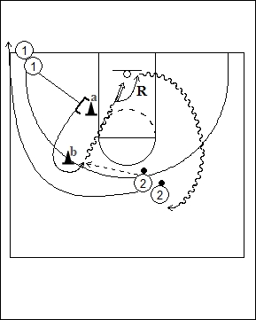

Catégorie : SHOOTS (Sh-017)
Déroulement
- Les joueurs sont sur deux files : une avec ballons du côté droit à hauteur de la ligne des trois points, l’autre du côté gauche à la baseline.
- Le premier joueur de la file 1 part de la baseline, stoppe devant le cône a et le touche, change de direction, contourne le cône b et reçoit la passe du premier joueur de la file 2. Il réalise alors un ou deux dribbles et le lay-up.
- Après son shoot, 1 prend le rebond et va en 2, tandis que 2 va en 1.
Coaching points
- Dans ce drill pour les plus jeunes, il convient d’insister sur les détails : lâcher le ballon le plus haut possible, hauteur du deuxième pas, ballon maintenu du côté du shoot (ici : gauche); plus on "arrive vite", plus il faut "déposer" le ballon (main en-dessous du ballon).
- On peut demander un jump shoot : s’arrêter à hauteur du cône a et jump shoot; changement de direction à hauteur du cône a suivi d’un jump shoot; …
- Pour le jump shoot : appuis bien orientés vers la cible; retomber à l’emplacement des appuis; etc ...